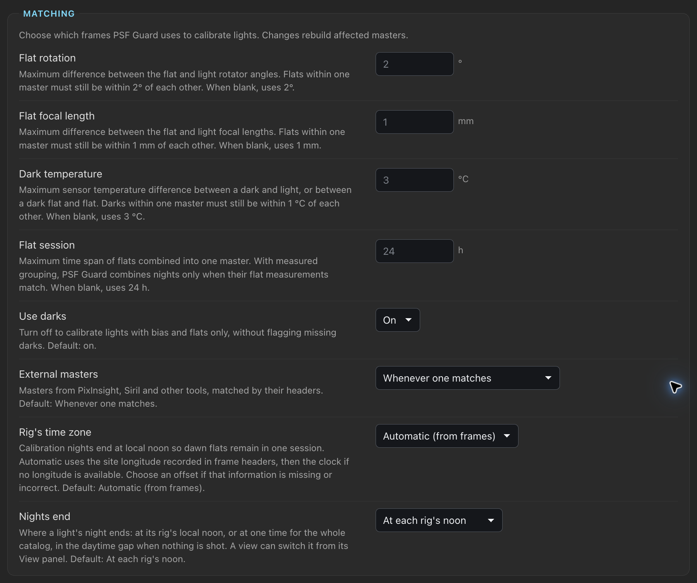

Calibration Masters & Settings
See how PSF Guard matches calibration frames, builds masters and applies them to lights. Set matching limits for the server or one rig.
Calibration guides
- Calibration Libraries
- Calibration Grades & Coverage
- Flats & Dust Changes
- Calibration Masters & Settings
Safe matching
A calibration frame must agree with every setting the light records. If the light records a value and the frame does not, they do not match. A frame with no known camera name or sensor size never matches.
| Master | Must agree |
|---|---|
| Bias | Camera, dimensions, channels, binning, gain, offset, readout mode, Bayer layout |
| Dark | Bias fields; exposure within the larger of 0.1% or 0.05 s; temperature within Dark temperature (3 °C); shot within Dark reach of the light |
| Dark flat | The flat's sensor settings, exposure and temperature |
| Flat | Bias fields, filter, telescope, focal length within Flat focal length (1 mm), and rotator angle within Flat rotation (2°) when both record it |
The readout mode counts however the driver spelled it. N.I.N.A. writes a
name such as Extend Fullwell 2CMS; PSF Guard compares names
ignoring case, so a High Gain dark never serves an Extend Fullwell light.
Frames in one master must also agree with each other: temperatures within 1 °C, and flats within 2°, 1 mm and one Flat session of each other. With flats grouped by measurement, only nights that measured alike pool. The nearest group with enough frames builds the master, up to 64 frames. Before integrating, Seiza checks the inputs again and leaves out any it will not accept, such as a frame filed under the wrong filter, camera or readout mode; the stack warning lists them.
Mark where calibration stops being valid
Nearest in time is the right default, but it cannot know about a dust cleaning or a re-spaced imaging train. Flat groups catch many such changes in flats; mark the rest by hand. On the Calibration page, the session's header marks every frame of a session, and the frame panel one frame: ◂ Before only for the last set before the change, After only ▸ for a set shot right after it, and Both to clear the mark. Matching never takes a marked frame across its boundary, for any kind. A light shot at the boundary instant matches either way, and a frame with no capture time keeps matching. Marks survive rescans and sync with the library.
Dark masters
Darks keep for months, so a dark master can draw on several nights. It uses the nearest complete night of darks alone. When no night is complete, it pools the nights within reach, nearest first. Three settings under Settings › Calibration › Dark masters shape this, for every rig or one:
| Setting | Default | Effect |
|---|---|---|
| Dark reach | 183 days | A dark shot further than this from the light does not match. A dark marked to serve lights before or after it follows its mark instead, however old. |
| Complete night | 10 darks | The nearest night with this many matching darks makes the master alone. With fewer, nights pool. |
| Dark choice | Complete set first | Which set of darks, or bias, builds the master when several match. |
A dark matches a light within 3 °C, but one master takes only darks within 1 °C of each other, so several sets can match. With Complete set first, the nearest set with at least Complete night frames builds the master, and a nearer, smaller set serves only when no set is complete. Nearest set keeps the old rule, the nearest two or more frames however few, and a two-frame master puts its own read noise into every light as row banding. Bias masters follow the same choice, and WBPP runs and exports take the same frames. A rig with no matching darks can turn Use darks off: its lights take bias and flats, with no missing-dark flag.
Masters from other software
A master bias, dark or flat from WBPP, Siril or another tool imports like
any calibration frame. A master IMAGETYP or an
NCOMBINE card marks it, and the frame panel shows a
Master badge. PSF Guard uses it as-is, never integrated
again, and does not grade it.
- Matching is lenient, since such files often drop gain, offset and temperature: what both sides record must agree, and the camera name or sensor size must still match. A dark's exposure must still match. The stack report shows which missing fields it accepted.
- A master dark that records no sensor temperature, such as one from WBPP, calibrates cooled lights.
- WBPP's FITS masters are floats scaled 0 to 1. PSF Guard copies such a master into its cache once, on the same 16-bit scale as every other frame. PSF Guard leaves the original unchanged.
External masters, under Settings › Calibration › Matching, decides how they take part, for every rig or one: Whenever one matches (default), Only if raw frames can't build one, or Never.
Calibration in stacks
The Calibration control in Stacks has three modes:
| Mode | What it does |
|---|---|
| Auto | Default. Applies only masters whose matching and dependencies are safe. |
| Force on | Applies every master that can be built, including a flat with no trusted pedestal. The card warns about the risk. |
| Off | Skips matching and stacks the raw lights. |
The project-wide choice is saved, and each channel card can override it. A stack whose lights need different flats or darks splits into calibration sessions and swaps masters between them; the card reports the session count. Calibration runs on raw CFA data before debayering. To keep lights the library can't calibrate out of stacks, see Lights that can't be calibrated.
Flats
A flat divides correctly only after the light's pedestal is removed, which a bias or dark master does. With flats only, PSF Guard fits the pedestal from the lights when the field has enough vignetting and the fit passes its checks; otherwise Auto leaves the flat out and says to import bias or dark frames.
A flat master gets a defect pass after integration, since a hot or dead pixel repeats in every flat and would print into every light. Darks keep their hot pixels, which subtract the lights' own; lights with no dark master get the same pixel filter before stacking.
Mask stars in flats, under Settings › Calibration › Flat masters, detects stars in each raw flat and leaves them out before integration. It is off by default, applies to every rig, and does not touch imported masters. Every pixel must keep at least two unmasked frames, or the flat build fails and the stack goes on without it.
Dew drying off the sensor window leaves spots that fade from one flat to the next. PSF Guard reads each new flat master back against its frames, counting only dips, so stars in sky flats do not count. When a minority disagree, the master rebuilds without them; when the whole set disagrees with itself, the next-nearest flat set takes its place; with no other set, the master serves and the card says to retake it.
Masters
Each master needs at least two frames. Bias and dark masters use a two-pass, leave-one-out sigma-clipped mean; flat masters use median/MAD clipping after calibrating and normalizing each frame. The FITS records the method, thresholds, frame count and rejected samples. A master builds on the cores its stack build was given; see Processor use. While it builds, the stack card and the header queue show which master and the frame or tile under way, and Stop ends the build and writes nothing.
Each master's file name comes from its input frames, file fingerprints,
upstream masters and algorithm versions, so a changed bias rebuilds the dark
and flat masters that used it, and an unchanged master is reused. Masters live
in the calibration masters folder, which is the cache unless
--calibration-dir or Settings › Storage ›
Folders sets another:
<calibration masters folder>/<database>/calibration-masters/PSF Guard removes old and half-written masters once unused, keeps any master whose frames are gone, and builds a removed master again when a stack needs it. See Disk use.
Masters on a finished stack shows the files that stack used, with the sensor temperatures and nights of their frames, so a dark master shot warmer than its lights stands out. Open in Calibration opens a master on the Calibration page's Masters tab.
Export with calibration frames
Project and target exports add, for each light, the raw frames a stack would build its masters from, matched by the settings for the light's rig. Poor frames, frames kept out and darks that caught stray light stay out.
- Flats go under their target and night, placed by flat group as a stack takes them, and lights of one night that need different flats get a session each. WBPP cannot carry flats across a change, so such a light keeps its flats as shot and is named in the export summary and the runner.
- When lights of one exposure were matched to different darks, each set
of darks goes in its own
DARKSET_<night>folder, so WBPP does not average every night's darks into one master. - With Leave out lights that can't be calibrated on, every export leaves out the lights a stack would, in either layout, from the dialog, the CLI and the AstroBin export, and says how many and why.
Layouts, options and the WBPP runner are on Export & AstroBin.
Settings › Calibration
Calibration limits are settings under Settings › Calibration. Values apply to every database on the server from the next match, check and stack. The defaults are the limits PSF Guard used before, so an untuned library behaves as it did. Anyone can read them; saving needs an editor account.
| Box | Settings (default) |
|---|---|
| Matching | Flat rotation (2°), Flat focal length (1 mm), Dark temperature (3 °C), Flat session, the longest span of flats one master takes (24 h), Use darks (on), External masters (Whenever one matches), Rig's time zone (Automatic), Nights end (At each rig's noon) |
| Dark masters | Dark reach (183 days), Complete night (10 darks), Dark choice (Complete set first); see Dark masters |
| Flat groups | Group flats, Dust split, Light pattern split; see Flat group settings |
| Flat masters | Mask stars in flats (off); see Flats |
| Light checks | Flat age limit (60 days), Flat age warning (30 days), Thin master (5 frames), and each light check |
| Frame grades | The suspect and poor limits of each frame check, folded until opened |
| Stacks and exports | Leave out lights that can't be calibrated (off) |
A light check that can raise Poor offers Poor (or Flag, where it raises Poor or Check by itself), Check only and Off; one that only raises Check offers Check and Off. Check only shows the finding as Check at most, so stacks keep the light and the Library pill reads Check at most. Off does not flag it, and the light's panel lists it under Not flagged.
Matching, Dark masters and Flat groups change which frames a light's
masters take, so the masters and stacks they touch build again; WBPP exports
and runs, and psf-guard export, match by the same settings.
Rig's time zone grades frames and plans flat groups again.
Light checks change only what is flagged, and Frame grades grade again from
the stored numbers; neither rereads the image pixels.

Settings for one rig
Rigs, below the global settings, lists every rig an open catalog records. Open a rig and press Own value beside a setting to give the rig its own; the rest inherit, and each row says from where. Save rig keeps the values, and Inherit everything clears them. Start from fills the form with a preset to review before saving:
| Preset | For | Sets |
|---|---|---|
| Sky flats | Twilight flats, whose light pattern and level change with the sky | Flat session 72 h, Flats from several nights off, Flat light pattern 5% and 10%, Flat too dim 5% and 2% |
| Dark library | A rig that cannot cap for darks and uses a library shot elsewhere | Dark reach 730 days, No matching bias or dark as Check only |
| No darks | Bias, dark flats and flats only | Use darks off |
A light's checks and a calibration frame's grade both use its own rig's values. Each catalog in Settings › Rigs links to its rigs here, and this list links back. An older PSF Guard that saves its settings drops the rigs' values, so set them again after a downgrade.